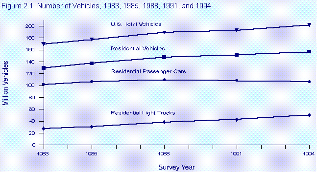
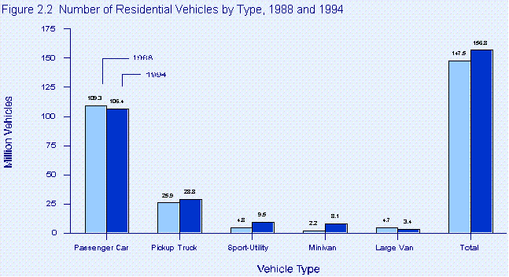
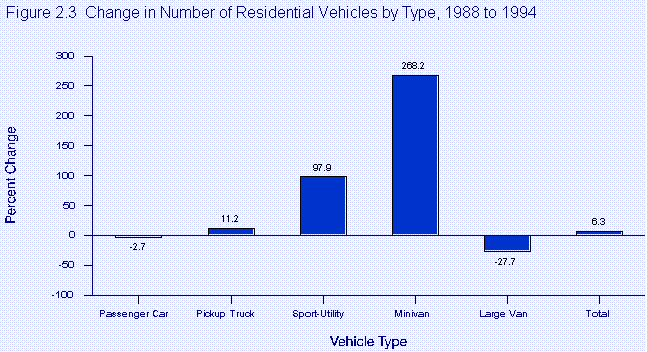
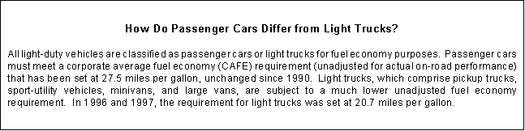
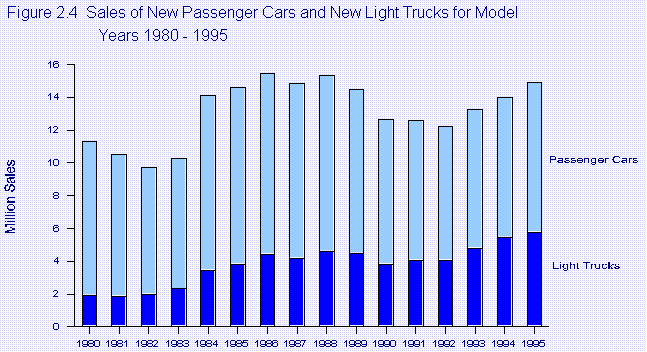
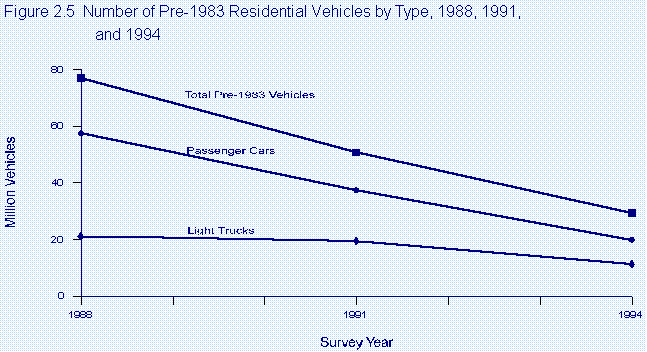
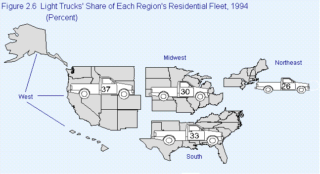
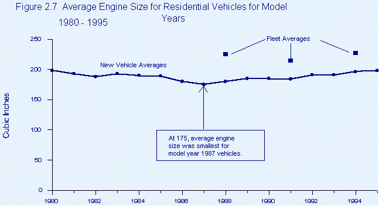
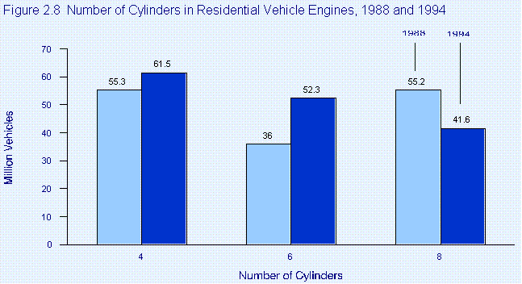
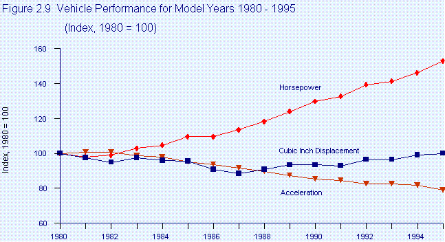

EIA Home > Transportation Home Page > Chapter 2. Vehicle Characteristics
Chapter 2. Vehicle CharacteristicsU.S. households used a fleet of nearly 157 million vehicles in 1994. Despite remarkable growth in the number of minivans and sport-utility vehicles, passenger cars continued to predominate in the residential vehicle fleet. This chapter looks at changes in the composition of the residential fleet in 1994 compared with earlier years and reviews the effect of technological changes on fuel efficiency (how efficiently a vehicle engine processes motor fuel) and fuel economy (how far a vehicle travels on a given amount of fuel). Using data unique to the Residential Transportation Energy Consumption Survey, it also explores the relationship between residential vehicle use and family income.
The number of vehicles in U.S. households rose from 148 million in 1988 to 157 million in 1994, an increase of 9 million vehicles. During the same period, the U.S. population grew by almost 15 million persons to 260 million.(1) The average annual growth rates of both residential vehicles and population equaled 1.0 percent. The number of licensed drivers grew(2) at an average annual rate of 1.2 percent, and, in 1994, there were 1.1 licensed drivers per residential vehicle, slightly more than in 1988. Residential vehicles continued to account for the majority of all U.S. vehicles. Not surprisingly, the rate of increase in vehicles available for use in households was approximately the same as the rate of increase for the U.S. total vehicle stock (Figure 2.1).  Note: U.S. total vehicles include motorcycles and buses, as well as other nonresidential vehicles, which are excluded from the Residential Transportation Energy Consumption Survey. Sources: U.S. Total Vehicles: Energy Information Administration (EIA), Annual Energy Review 1995, DOE/EIA-0384(95) (Washington, DC, July 1996), Table 2.16. Residential Vehicles: 1983--EIA, Consumption Patterns of Household Vehicles 1983, DOE/EIA-0464(83) (Washington, DC, January 1985), Table 11. 1985--EIA, Consumption Patterns of Household Vehicles 1985, DOE/EIA-0464(85) (Washington, DC, April 1987), Table 8. 1988--EIA, Household Vehicles Energy Consumption 1988, DOE/EIA-0464(88) (Washington, DC, February 1990), Table 6. 1991--EIA, Household Vehicles Energy Consumption 1991, DOE/EIA-0464(91) (Washington, DC, December 1993), Table 8. 1994--Table 5.1 in this report. A Growing Number of Passenger Cars Were Replaced by Light Trucks The number of passenger cars in U.S. households was 106 million in 1994 (Figure 2.2). At a 68-percent share, passenger cars continued to dominate the residential fleet, but not to the same extent as in 1988, when their share was 74 percent.  Note:
Totals may not equal sum of components due to independent rounding.
In contrast, there was remarkable growth in the number of household vehicles categorized as light trucks, particularly minivans. From 1988 through 1994, the number of light trucks in the residential fleet increased by an estimated 12 million, which more than compensated for the apparent decline in the number of passenger cars. The number of minivans grew dramatically. It rose from 2.2 million in 1988 to 8.1 million in 1994, an increase of 268 percent (Figure 2.3). Minivans, introduced into the market in the mid-1980's, accounted for nearly 1 in 20 residential vehicles in 1994.  Sources: 1988--Energy Information Administration, Household Vehicles Energy Consumption 1988, DOE/EIA-0464(88) (Washington, DC, February 1990), Table 6. 1994--Table 5.1 in this report.  Sport-utility vehicles, termed "jeep-like" vehicles in the 1988 survey, also increased in number at a remarkable rate. From 1988 through 1994, they rose 98 percent to 9.5 million. Pickup trucks were the most prevalent of the light trucks on the road. Almost 1 in 5 residential vehicles in 1994 was a pickup truck. In 1994, the number of pickup trucks totaled 29 million. The only type of light truck estimated to have declined over the period was the large van. The large van share of the residential fleet fell from 3 percent in 1988 to 2 percent in 1994 when large vans numbered 3.4 million. Throughout the 7-year period of 1988 through 1994, inflation-adjusted prices of motor fuel (motor gasoline and diesel fuel) were well below the peak prices of the early 1980's. For example, at its peak in 1981, the adjusted price (in chained [1992] dollars(3) and including taxes) of unleaded regular motor gasoline was $2.09 per gallon, whereas in 1994 the comparable price was $1.06.(4) When motor fuel prices are relatively low, consumers have less incentive for choosing vehicles with higher fuel economy ratings. And, in fact, consumer preference for light trucks, which have significantly lower fuel economy ratings than do passenger cars, was one factor leading to the decline in the number of passenger cars. A second factor contributing to the increase in light trucks' share of the residential fleet was the continuing tendency of householders to keep older light trucks in operation while retiring older passenger cars. Those factors had their greatest effect in the West, where light trucks make up a higher percentage of the residential vehicle fleet than in other regions. Consumer Preference for Light Trucks Increased Total sales of new light trucks to all sectors rose during the 1980's and 1990's (Figure 2.4). For model year 1995, 5.7 million light trucks were sold, more than ever before and nearly three times the number of sales for model year 1980. Although sales of new passenger cars fluctuated and rose as high as 11 million for model year 1986, for model year  Source: Federal Highway Administration, Summary of Fuel Economy Performance (Washington, DC, April 1996), p. 3. 1995 sales of 9.2 million were about the same as they had been for model year 1980 (9.4 million). For model year 1995, therefore, light trucks accounted for slightly more than one-third of total sales. Sales data disaggregated by sector are not available, but changes in the composition of the residential fleet, as noted above, clearly reflect householders' growing preference for light trucks. That preference restrained the increase in the fuel economy of the residential fleet as a whole (see Chapter 4). Light Trucks Were Kept in Operation Longer Although the number of old passenger cars in the residential fleet declined rapidly from 1988 through 1994, old light trucks, particularly pickup trucks and large vans, were taken out of service at a slower rate. For example, the number of passenger cars of model year 1982 or earlier fell from 57 million in 1988 to 20 million in 1994, meaning that about two-thirds of those older passenger cars were retired from the residential fleet over the 7-year period (Figure 2.5). By comparison, the number of pre-1983 light trucks fell from 21 million to 11 million, meaning that only about one-half were retired.  Sources: 1988--Energy Information Administration (EIA), Household Vehicles Energy Consumption 1988, DOE/EIA-0464(88) (Washington, DC, February 1990), Table 9. 1991--EIA, Household Vehicles Energy Consumption 1991, DOE/EIA-0464(91) (Washington, DC, December 1993), Table 11. 1994--Table 5.4 in this report. The tendency to retain old light trucks led to a difference in the average age of light trucks and passenger cars. In the 1994 fleet, the average age of passengers cars was 8.1 years. Light trucks as a group averaged 8.5 years, but there was wide variation in the average age of different types of light trucks. For example, pickup trucks and large vans were, on average, 9.9 years old, whereas sport-utility vehicles averaged 6.6 years and minivans averaged 4.8 years. Light Trucks Were Most Prevalent in the West In 1994, the western fleet had a high ratio of light trucks to passenger cars. Light trucks made up 37 percent of the residential fleet in the West, compared with 33 percent in the South, 30 percent in the Midwest, and 26 percent in the Northeast (Figure 2.6).  Source: Table 5.16 in this report. The national tendency to keep old trucks in service longer than old cars meant that in the West old residential vehicles as a whole were taken out of service at a slower rate than in the other regions of the country. For example, vehicles of model year 1988 or earlier accounted for a 64-percent share of all of the residential vehicles in the West. In the other regions of the country, the shares were lower: 59 percent in the Midwest and 57 percent each in the South and Northeast. The rural nature of much of the West may have contributed to the prevalence of light trucks in the region. In general, rural areas had a higher ratio of light trucks to passenger cars than did urban areas. Even California, the most populous State in the West, had a ratio above the national average. In California, 1 of every 3 residential vehicles was a light truck. In contrast, in New York fewer than 1 in 4 was. Residential Vehicles at the Household Level In 1994, the 156.8 million residential vehicles were divided among the 84.9 million households that had at least one vehicle, meaning that each of those households had an average of about 1.8 vehicles. Despite the increase in the total number of vehicles in the residential fleet from 1988 to 1994, the average number of vehicles per household remained at 1.8 because the growth in the number of households kept pace with the growth in the number of vehicles. An additional 12.5 million households, including many of the poorest households, had no vehicles. Lower-Income Households Had Fewer Vehicles in 1994 Lower-income households--those with annual family incomes below $25,000--had, on average, 1.5 vehicles in 1994. Not surprisingly, households with annual family incomes of $25,000 or above had more vehicles--2.1, on average More Households in 1994 Had No Vehicles In 1988 and 1991, the number of households without vehicles remained at about 10 million, even though the total number of households rose 3.0 million from 1988 to 1991. In 1991, the share of households without vehicles was 10.6 percent. In 1994, by contrast, the share of households without vehicles jumped to 12.7 percent. The total number of households rose 2.7 million from 1991 to 1994, while the number of households without vehicles rose 2.5 million. The lowest-income households accounted for 83 percent of the total increase in the number of households without vehicles. (The lowest-income households are those categorized as eligible for Federal assistance because their income is lower than 150 percent of the national poverty line or 60 percent of statewide median income, whichever is higher.(5)) In 1994, 30 percent of the Nation's lowest-income households were without vehicles, compared with a national average for all households of 13 percent. Changes in Residential Vehicle Technology The transportation sector relies almost entirely on petroleum. Because it also accounts for about two-thirds of U.S. total petroleum demand,(6) passenger cars and light trucks became a focus of efforts to use petroleum more efficiently, thereby restraining demand. The Energy Policy and Conservation Act of 1975 required passenger car and light truck manufacturers to meet corporate average fuel economy (CAFE) standards applied on a fleet-wide basis for each manufacturer.(7) The CAFE standards, higher fuel prices in the 1970's and 1980's, and environmental quality initiatives such as the Clean Air Act Amendments of 1990 all contributed to increasing the demand for more fuel-efficient vehicles. In turn, the demand for more fuel-efficient vehicles spurred improvements in existing technologies and the development of new technologies. For example, using lighter-weight materials and reducing the size of vehicles led to lighter vehicles that consumed less fuel per mile. Many improvements occurred in engine technology. Increasing the number of valves per cylinder resulted in increased performance from smaller, more fuel-efficient engines. Increasing the number of gears in manual and automatic transmissions allowed engines to operate at peak efficiency more of the time. Similarly, using lockup torque converters to allow direct drive under some driving conditions also increased fuel economy. One of the most far-reaching improvements in engine technology concerned fuel injection, which was available but not widely used prior to the mid-1980's. Valued for its greater fuel economy, as well as for its ability to control carbon monoxide emissions and to improve engine performance, fuel injection technology began to penetrate the fleet during the 1980's, and it was improved to such an extent that after 1990 virtually all new light-duty vehicles were equipped with fuel injection instead of carburetors. By 1994, the trend toward the use of fuel injection rather than carburetors for fuel metering had brought the share of residential vehicles using fuel injection to nearly half of the total residential fleet. That share will increase rapidly in future years as older vehicles are retired. Engine Size Shrank and Then Increased Slowly For model year 1975 (the year in which CAFE standards were first mandated), residential vehicle engine size averaged 293 cubic inches of displacement.(8) Twelve years later, the engines were much smaller. Model year 1987 engines averaged 175 cubic inches (Figure 2.7). Thereafter, engine size trended upward, reaching an average of 198 cubic inches of displacement for model year 1995.  Sources: New Vehicle Averages: Environmental Protection Agency, Light-Duty Automotive Technology and Fuel Economy Trends Through 1996, EPA/AA/TDSG/96-01 (Washington, DC, August 1996), Table 1. Fleet Averages: Energy Information Administration calculations made on the basis of data from the Residential Transportation Energy Consumption Survey 1988, 1991, and 1994, March 17, 1997. As is generally the case, changes in the residential vehicle fleet as a whole lagged the changes by model year. Of the 3 years for which fleet data are available, 1991 had the lowest average engine size (despite an upward trend in the 4 preceding model years). In 1994, the fleet average was 227 cubic inches, while the 1994 model year average was 196. Engines Averaged Fewer Cylinders Meanwhile, the average number of cylinders in residential vehicle engines was decreasing. In 1988, 55 million vehicles, over one-third of the total residential fleet, had 8-cylinder engines. In 1994, 8-cylinder engines were found in only about 42 million vehicles, just over one-fourth of the total (Figure 2.8).  Sources: 1988--Energy Information Administration, Household Vehicles Energy Consumption 1988, DOE/EIA-0464(88) (Washington, DC, February 1990), Table 6. 1994--Table 5.1 in this report. The trend over the 7-year period was toward more 4- and 6-cylinder engines. In 1994, 4-cylinder engines were the most common (62 million out of a total of 157 million), but the 52 million 6-cylinder engines represented the greatest increase (45 percent) relative to the 1988 level. Power and Performance Improved but Fuel Economy Stagnated The improvements in residential vehicle technology allowed for improvements in performance despite shrinking or relatively stable engine size. However, improved performance came at the expense of improvements in fuel economy. For example, technical improvement in the efficiency of engines can be used to provide increased acceleration or smaller, lighter engines with better fuel economy. The effect of the improvements was particularly noticeable over the 1988-to-1994 period, when engine size stayed at or below 198 cubic inches of displacement but power and performance rose markedly. For example, the average horsepower of new vehicles rose from 123 in 1988 to 159 in 1994, an increase of 29 percent (Figure 2.9). Vehicles manufactured in 1994, with an average of 159 horsepower, had the highest horsepower rating in at least 20 years, a rating markedly higher than the 20-year low-point of 102 horsepower in 1981.  Source: Environmental Protection Agency, Light-Duty Automotive Technology and Fuel Economy Trends Through 1996, EPA/AA/TDSG/96-01 (Washington, DC, August 1996), Table 1. Similarly, the time required for the average residential vehicle to accelerate from 0 miles per hour to 60 miles per hour was reduced by 1.1 seconds, from 12.8 seconds in 1988 to 11.7 seconds in 1994. The 11.7 seconds time was the fastest in at least 20 years.(9) Over the same 7 years, however, the average fuel economy of new vehicles stagnated. Nevertheless, the average fuel economy of the residential fleet rose somewhat, as new, more fuel-economic vehicles replaced older, less fuel-economic vehicles (see Chapter 4). 1. Energy Information Administration, Annual Energy Review 1995, DOE/EIA-0384(95) (Washington, DC, July 1996), Table 1.5. 2. 1988--Federal Highway Administration (FHA), Highway Statistics 1988, FHWA-PL-89-003 (Washington, DC, September 1989), Table DL-1B. 1994--FHA, Highway Statistics 1994, FHWA-PL-95-042 (Washington, DC, October 1995), Table DL-1B. 3. "Chained dollars" is a measure used to express real prices. Real prices are those that have been adjusted to remove the effect of changes in the purchasing power of the dollar; they usually reflect buying power relative to a reference year (in this case, 1992). Prior to 1996, real prices were expressed in constant dollars, a measure based on the weights of goods and services in a single year, usually a recent year. In 1996, the U.S. Department of Commerce introduced the chained-dollar measure. The new measure is based on the average weights of goods and services in successive pairs of years. It is "chained" because the second year in each pair, with its weights, becomes the first year of the next pair. The advantage of using the chained-dollar measure is that it is more closely related to any given period covered and is therefore subject to less distortion over time. 4. Energy Information Administration, Annual Energy Review 1995, DOE/EIA-0384(95) (Washington, DC, July 1996), Table 5.21. 5. Energy Information Administration, Household Energy Consumption and Expenditures 1993, DOE/EIA-0321(93) (Washington, DC, October 1995), p. 296. 6. Energy Information Administration, Annual Energy Review 1995, DOE/EIA-0384(95) (Washington, DC, July 1996), Table 5.12b. 7. International Trade Association, "Corporate Average Fuel Economy Explained." Online. (http://www.ita.doc.gov/industry/basic/cafe.htm) (March 5, 1997). 8. Environmental Protection Agency, Light-Duty Automotive Technology and Fuel Economy Trends Through 1996, EPA/AA/TDSG/96-01 (Washington, DC, August 1996), Table 1. 9. Environmental Protection Agency, Light-Duty Automotive Technology and Fuel Economy Trends Through 1996, EPA/AA/TDSG/96-01 (Washington, DC, August 1996), Table 1. File Last Modified: February 1, 2002 If you are having any technical problems with this site, please contact the EIA Webmaster at wmaster@eia.doe.gov |